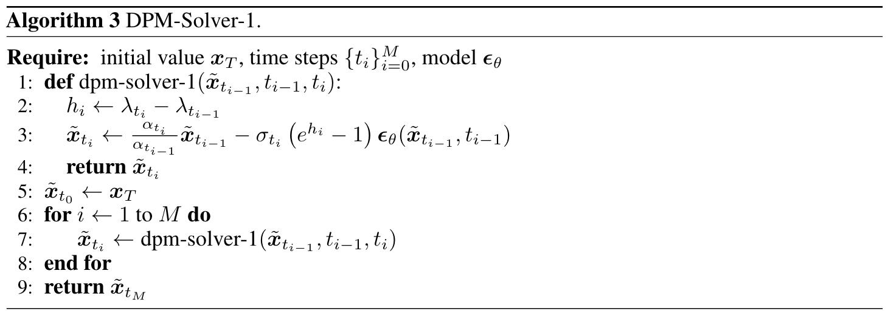
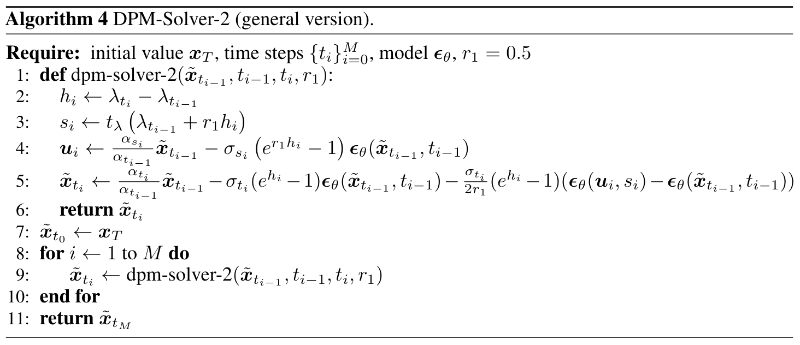
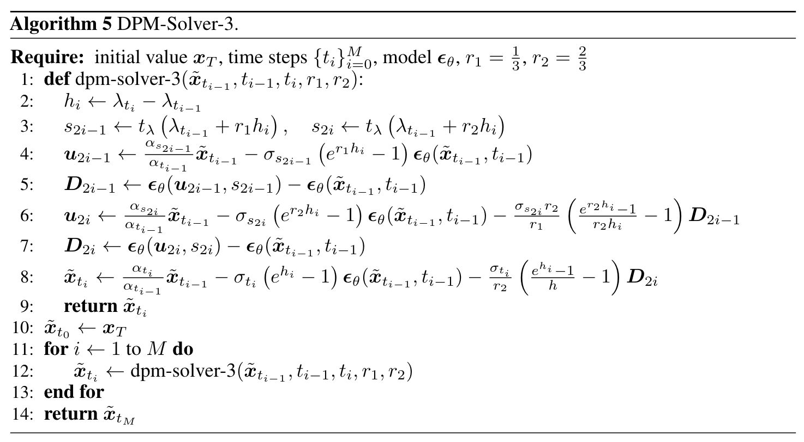
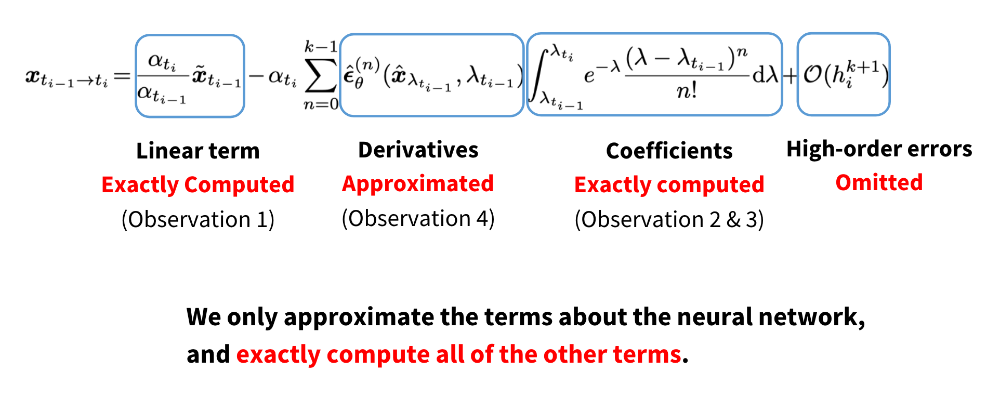

DPM-Solver
DPM-Solver
从扩散 ODE 入手
相比扩散 SDE，由于扩散 ODE 没有随机性，更适合采用大步长以加速采样，因此本文作者只考虑扩散 ODE： \[ \mathrm d\mathbf x_t=\left[f(t)\mathbf x_t-\frac{1}{2}g^2(t)\nabla_{\mathbf x_t}\log q(\mathbf x_t)\right]\mathrm dt \] 代入“噪声预测模型” \(\epsilon_\theta(\mathbf x_t,t)\approx-\sigma_t\nabla_{\mathbf x_t}\log q(\mathbf x_t)\)： \[ \mathrm d\mathbf x_t=\left[f(t)\mathbf x_t+\frac{g^2(t)}{2\sigma_t}\epsilon_\theta(\mathbf x_t,t)\right]\mathrm dt\tag{1}\label{ode} \] 那么从 \(T\) 到 \(0\) 解该 ODE 即是生成过程。具体而言，设已知 \(\mathbf x_s\) 的值，那么从 \(s\) 到 \(t\) 积分得： \[ \mathbf x_t=\mathbf x_s+\int_s^t\left(f(t)\mathbf x_t+\frac{g^2(t)}{2\sigma_t}\epsilon_\theta(\mathbf x_t,t)\right)\mathrm dt \] 在之前的工作中，人们使用各种黑盒 ODE 数值求解器求解上述微分方程，相当于在用不同方式近似上面的积分（例如 Euler 法就是用矩形近似积分，improved Euler 就是用梯形近似积分），但在步数较少时它们效果并不好。因此，本文作者着重考虑了扩散 ODE 的特殊结构，提出了 DPM-Solver.
观察 1：半线性结构
作者首先注意到，\(\eqref{ode}\) 式可以拆解为两部分——\(f(t)\mathbf x_t\) 是关于 \(\mathbf x_t\) 的线性部分，\(\frac{g^2(t)}{2\sigma_t}\epsilon(\mathbf x_t,t)\) 是关于 \(\mathbf x_t\) 的非线性部分，其中非线性来自于神经网络。作者将这样的特殊结构称作扩散 ODE 的半线性 (semi-linear) 结构。
半线性结构带来的好处是——我们可以在最终的解中分离出一个可以解析计算的部分，这部分不必用数值法求解。具体而言，由积分因子法可得： \[ \mathbf x_t=\underbrace{e^{\int_s^t f(\tau)\mathrm d\tau}\mathbf x_s}_\text{exactly computed}+\int_s^t\left(e^{\int_\tau^tf(r)\mathrm dr}\frac{g^2(\tau)}{2\sigma_\tau}\epsilon_\theta(\mathbf x_\tau,\tau)\right)\mathrm d\tau\tag{2}\label{obs1} \] 式中第一部分就是可以直接解析计算的部分。
推导过程：将 \(\eqref{ode}\) 式中线性部分移项到左边： \[\mathrm d\mathbf x_t-f(t)\mathbf x_t\mathrm dt=\frac{g^2(t)}{2\sigma_t}\epsilon_\theta(\mathbf x_t,t)\mathrm dt\] 两边乘以积分因子 \(v(t)\)： \[v(t)\mathrm d\mathbf x_t-v(t)f(t)\mathbf x_t\mathrm dt=\frac{v(t)g^2(t)}{2\sigma_t}\epsilon_\theta(\mathbf x_t,t)\mathrm dt\] 选择特殊的积分因子使得左边可积： \[\mathrm d(v(t)\cdot \mathbf x_t)=\frac{v(t)g^2(t)}{2\sigma_t}\epsilon_\theta(\mathbf x_t,t)\mathrm dt\] 两边从 \(s\) 到 \(t\) 积分得： \[v(t)\mathbf x_t-v(s)\mathbf x_s=\int_s^t\left(\frac{v(\tau)g^2(\tau)}{2\sigma_\tau}\epsilon_\theta(\mathbf x_\tau,\tau)\right)\mathrm d\tau\] 解得： \[\mathbf x_t=\frac{v(s)}{v(t)}\mathbf x_s+\int_s^t\left(\frac{v(\tau)}{v(t)}\frac{g^2(\tau)}{2\sigma_\tau}\epsilon_\theta(\mathbf x_\tau,\tau)\right)\mathrm d\tau\tag{3}\label{obs1-1}\] 现在我们只需要确定下积分因子即可。积分因子的构造需要满足： \[\mathrm d(v(t)\cdot\mathbf x_t)=\mathbf x_t\mathrm dv(t)+v(t)\mathrm d\mathbf x_t=v(t)\mathrm d\mathbf x_t-v(t)f(t)\mathbf x_t\mathrm dt\] 也即： \[\mathrm dv(t)=-v(t)f(t)\mathrm dt\] 这是一个一阶线性齐次常微分方程，分离变量得： \[\frac{\mathrm dv(t)}{v(t)}=-f(t)\mathrm dt\] 两边从 \(0\) 到 \(t\) 积分得： \[\ln v(t)-\ln v(0)=-\int_0^t f(\tau)\mathrm d\tau\] 故： \[v(t)=v(0)e^{-\int_0^t f(\tau)\mathrm d\tau}\] 注意 \(\eqref{obs1-1}\) 式中出现 \(v(t)\) 的地方都是两个相除的形式： \[\frac{v(s)}{v(t)}=\frac{v(0)e^{-\int_0^sf(\tau)\mathrm d\tau}}{v(0)e^{-\int_0^tf(\tau)\mathrm d\tau}}=e^{\int_s^tf(\tau)\mathrm d\tau}\] 代入 \(\eqref{obs1-1}\) 式得： \[\mathbf x_t=e^{\int_s^tf(\tau)\mathrm d\tau}+\int_s^t\left(e^{\int_\tau^tf(\tau)\mathrm d\tau}\frac{g^2(\tau)}{2\sigma_\tau}\epsilon_\theta(\mathbf x_\tau,\tau)\right)\mathrm d\tau\] 这就推出了 \(\eqref{obs1}\) 式。
观察 2：变量代换
对于扩散模型来说，系数 \(f(t),g(t)\) 的含义不如 noise schedule \(\alpha_t,\sigma_t\) 的含义明确，因此我们考虑将 \(f(t),g(t)\) 替换为 \(\alpha_t,\sigma_t\). 回忆 \(\alpha_t,\sigma_t\) 来自扰动核的定义： \[ q(\mathbf x_t\vert\mathbf x_0)=\mathcal N(\mathbf x_t;\alpha_t\mathbf x_0,\sigma^2_t\mathbf I) \] 进一步地，记 \(\lambda_t\) 表示半对数信噪比： \[ \lambda_t=\log(\alpha_t/\sigma_t) \] 那么可以推出 \(f(t),g(t)\) 与 \(\alpha_t,\sigma_t,\lambda_t\) 之间有如下关系： \[ f(t)=\frac{d\log \alpha_t}{\mathrm dt},\quad g^2(t)=-2\sigma_t^2\frac{\mathrm d\lambda_t}{\mathrm dt} \]
推导过程：对一个马尔可夫过程，考虑时刻 \(r\) 到时刻 \(t\;(r<t)\) 的转移概率。由扰动核可解得： \[q(\mathbf x_t\vert\mathbf x_r)=\mathcal N\left(\mathbf x_t;\frac{\alpha_t}{\alpha_r}\mathbf x_r,\left(\sigma_t^2-\sigma_r^2\frac{\alpha_t^2}{\alpha_r^2}\right)\mathbf I\right)\] 写作采样形式： \[\mathbf x_t=\frac{\alpha_t}{\alpha_r}\mathbf x_r+\sqrt{\sigma_t^2-\sigma_r^2\frac{\alpha_t^2}{\alpha_r^2}}\boldsymbol\epsilon,\quad \boldsymbol\epsilon\sim\mathcal N(\mathbf0,\mathbf I)\] 写出差分格式： \[\mathbf x_t-\mathbf x_r=\frac{\alpha_t-\alpha_r}{\alpha_r}\mathbf x_r+\sigma_t\sqrt{1-e^{2(\lambda_t-\lambda_r)}}\boldsymbol\epsilon,\quad\boldsymbol\epsilon\sim\mathcal N(\mathbf0,\mathbf I)\] 令 \(r\to t\)，得： \[\mathrm d\mathbf x_t=\frac{\dot\alpha_t}{\alpha_t}\mathbf x_t+\sigma_t\sqrt{-2\dot\lambda_t}\mathrm d\mathbf w_t\] 注意 \(\lambda_t\) 是单调递减的，因此根号下是正数。对比扩散 SDE： \[\mathrm d\mathbf x_t=f(t)\mathbf x_t\mathrm dt+g(t)\mathrm d\mathbf w_t\] 可知： \[f(t)=\frac{\dot\alpha_t}{\alpha_t}=\frac{\mathrm d\log\alpha_t}{\mathrm dt},\quad g^2(t)=-2\sigma_t^2\frac{\mathrm d\lambda_t}{\mathrm dt}\] 这就推出了 \(f(t),g(t)\) 与 \(\alpha_t,\sigma_t,\lambda_t\) 的关系。
将该关系代入 \(\eqref{obs1}\) 式得： \[ \mathbf x_t=\frac{\alpha_t}{\alpha_s}\mathbf x_s-\alpha_t\int_s^t\left(\frac{\mathrm d\lambda_\tau}{\mathrm d\tau}\right)\frac{\sigma_\tau}{\alpha_\tau}\epsilon_\theta(\mathbf x_\tau,\tau)\mathrm d\tau\tag{4}\label{obs2} \] 果然看着简洁了一些。更进一步，由于信噪比是单调的，所以时间步 \(\tau\) 可以与 \(\lambda_\tau\) 之间建立起一一映射，因此把积分变量从时间步换成对数信噪比得： \[ \mathbf x_t=\underbrace{\frac{\alpha_t}{\alpha_s}\mathbf x_s}_\text{exactly computed}-\alpha_t\underbrace{\int_{\lambda_s}^{\lambda_t}e^{-\lambda}\hat\epsilon_\theta(\hat{\mathbf x}_\lambda,\lambda)\mathrm d\lambda}_\text{exponentially weighted integral}\tag{5}\label{obs2-1} \] 这里用 \(\hat\epsilon_\theta(\hat{\mathbf x}_\lambda,\lambda)\) 表示以半对数信噪比为参数的、对应 \(\epsilon_\theta(\mathbf x_{t_\lambda},t_\lambda)\) 的模型。现在，我们只需要通过数值方法计算 \(\int e^{-\lambda}\hat\epsilon_\theta(\hat{\mathbf x}_\lambda,\lambda)\mathrm d\lambda\) 一项即可，作者将其称作 \(\hat\epsilon_\theta\) 的指数加权积分。
观察 3：解析计算系数
虽然我们可以直接用数值方法去近似指数加权积分一项，但是本着能求解析解就尽可能求解析解的原则，作者对该积分项做了进一步处理。考虑将 \(\hat\epsilon_\theta(\hat{\mathbf x}_\lambda,\lambda)\) 在 \(\lambda_{t_{i-1}}\) 处做 \(k\) 阶泰勒展开： \[ \hat\epsilon_\theta(\hat{\mathbf x}_\lambda,\lambda)=\sum_{n=0}^{k-1}\frac{(\lambda-\lambda_{t_{i-1}})^n}{n!}\hat\epsilon_\theta^{(n)}(\hat{\mathbf x}_{\lambda_{t_{i-1}}},\lambda_{t_{i-1}})+\mathcal O((\lambda-\lambda_{t_{i-1}})^k) \] 代入 \(\eqref{obs2-1}\) 式得： \[ \mathbf x_{t_i}=\frac{\alpha_{t_i}}{\alpha_{t_{i-1}}}\mathbf x_{t_{i-1}}-\alpha_{t_i}\sum_{n=0}^{k-1}\; \underbrace{\vphantom{\int_{\lambda_{t_{i-1}}}}\hat\epsilon_\theta^{(n)}(\hat{\mathbf x}_{\lambda_{t_{i-1}}},\lambda_{t_{i-1}})}_\text{derivatives}\; \underbrace{\int_{\lambda_{t_{i-1}}}^{\lambda_{t_i}}e^{-\lambda}\frac{(\lambda-\lambda_{t_{i-1}})^n}{n!}\mathrm d\lambda}_{\text{coefficients}\;C_n}+\mathcal O(h_i^{k+1})\tag{6}\label{obs3} \] 其中 \(h_i=\lambda_{t_i}-\lambda_{t_{i-1}}\). 作者指出，上式中的系数 \(C_n\) 是可以解析计算的。具体而言，实施一次分部积分： \[ \begin{align} C_n&=\int_{\lambda_{t_{i-1}}}^{\lambda_{t_i}}e^{-\lambda}\frac{(\lambda-\lambda_{t_{i-1}})^n}{n!}\mathrm d\lambda\\ &=-\int_{\lambda_{t_{i-1}}}^{\lambda_{t_i}}\frac{(\lambda-\lambda_{t_{i-1}})^n}{n!}\mathrm de^{-\lambda}\\ &=\left(-\frac{(\lambda-\lambda_{t_{i-1}})^n}{n!}e^{-\lambda}\right)\Bigg\vert_{\lambda_{t_{i-1}}}^{\lambda_{t_i}}+\int_{\lambda_{t_{i-1}}}^{\lambda_{t_i}}e^{-\lambda}\frac{(\lambda-\lambda_{t_{i-1}})^{n-1}}{(n-1)!}\mathrm d\lambda\\ &=-\frac{h_i^n}{n!}e^{-\lambda_{t_i}}+C_{n-1} \end{align} \] 发现系数存在递推关系，且最后一项 \(C_0\) 为： \[ C_0=\int_{\lambda_{t_{i-1}}}^{\lambda_{t_i}}e^{-\lambda}\mathrm d\lambda=e^{-\lambda_{t_{i-1}}}-e^{-\lambda_{t_i}}=\frac{\sigma_{t_i}}{\alpha_{t_i}}(e^{h_i}-1) \] 据此可以计算出 \(C_1,C_2\)： \[ \begin{align} C_1&=e^{-\lambda_{t_{i-1}}}-(1+h_i)e^{-\lambda_{t_i}}=\frac{\sigma_{t_i}}{\alpha_{t_i}}(e^{h_i}-1-h_i)\\ C_2&=e^{-\lambda_{t_{i-1}}}-\left(1+h_i+\frac{h_i^2}{2}\right)e^{-\lambda_{t_i}}=\frac{\sigma_{t_i}}{\alpha_{t_i}}\left(e^{h_i}-1-h_i-\frac{h_i^2}{2}\right) \end{align} \] 实际应用中，我们只考虑 \(k=1,2,3\)，因此不必计算更多的 \(C_n\). 取 \(k=1,2,3\) 相应得到的求解器称作 DPM-Solver-1, DPM-Solver-2, DPM-Solver-3，它们分别是 1,2,3 阶的 ODE 求解器。
例如，当 \(k=1\) 时，代入 \(C_0\) 即得到 DPM-Solver-1 的更新式： \[ \begin{align} \mathbf x_{t_i}&=\frac{\alpha_{t_i}}{\alpha_{t_{i-1}}}\mathbf x_{t_{i-1}}-\alpha_{t_i}\hat\epsilon_\theta(\hat{\mathbf x}_{\lambda_{t_{i-1}}},\lambda_{t_{i-1}})C_0+\mathcal O(h_i^2)\\ &=\frac{\alpha_{t_i}}{\alpha_{t_{i-1}}}\mathbf x_{t_{i-1}}-\sigma_{t_i}(e^{h_i}-1)\hat\epsilon_\theta(\hat{\mathbf x}_{\lambda_{t_{i-1}}},\lambda_{t_{i-1}})+\mathcal O(h_i^2)\\ &=\frac{\alpha_{t_i}}{\alpha_{t_{i-1}}}\mathbf x_{t_{i-1}}-\sigma_{t_i}(e^{h_i}-1)\epsilon_\theta(\mathbf x_{t_{i-1}},t_{i-1})+\mathcal O(h_i^2) \end{align} \]
可以发现这个式子与 DDIM 的更新式是一模一样的，因此 DDIM 就是一阶的 DPM-Solver.
观察 4：数值估计导数项
在计算更高阶的 DPM-Solver 时，我们需要计算 \(\eqref{obs3}\) 式中关于神经网络的高阶导数项 \(\hat\epsilon_\theta^{(n)}(\hat{\mathbf x}_\lambda,\lambda)\). 这一项可以用数值方法估计。例如，对于一阶导，取 \(\lambda_{s_i}=r_1\lambda_{t_i}+(1-r_1)\lambda_{t_{i-1}},\,r_1\in(0,1)\)，那么： \[ \hat\epsilon_\theta^{(1)}(\hat{\mathbf x}_{\lambda_{t_{i-1}}},{\lambda_{t_{i-1}}})\approx\frac{\hat\epsilon_\theta(\hat{\mathbf x}_{\lambda_{s_i}},\lambda_{s_i})-\hat\epsilon_\theta(\hat{\mathbf x}_{\lambda_{t_{i-1}}},\lambda_{t_{i-1}})}{\lambda_{s_i}-\lambda_{t_{i-1}}}=\frac{\hat\epsilon_\theta(\hat{\mathbf x}_{\lambda_{s_i}},\lambda_{s_i})-\hat\epsilon_\theta(\hat{\mathbf x}_{\lambda_{t_{i-1}}},\lambda_{t_{i-1}})}{r_1h_i} \] 一般可以取 \(r_1=0.5\). 据此我们推导 DPM-Solver-2 的更新式。在 \(\eqref{obs3}\) 式中取 \(k=2\)，得： \[ \begin{align} \mathbf x_{t_i}&=\frac{\alpha_{t_i}}{\alpha_{t_{i-1}}}\mathbf x_{t_{i-1}}-\alpha_{t_i}\left(C_0\cdot\hat\epsilon_\theta(\hat{\mathbf x}_{\lambda_{t_{i-1}}},\lambda_{t_{i-1}})+C_1\cdot\hat\epsilon_\theta^{(1)}(\hat{\mathbf x}_{\lambda_{t_{i-1}}},\lambda_{t_{i-1}})\right)+\mathcal O(h_i^3)\\ &=\frac{\alpha_{t_i}}{\alpha_{t_{i-1}}}\mathbf x_{t_{i-1}}-\sigma_{t_i}(e^{h_i}-1)\hat\epsilon_\theta(\hat{\mathbf x}_{\lambda_{t_{i-1}}},\lambda_{t_{i-1}})-\sigma_{t_i}(e^{h_i}-1-h_i)\hat\epsilon_\theta^{(1)}(\hat{\mathbf x}_{\lambda_{t_{i-1}}},\lambda_{t_{i-1}})+\mathcal O(h_i^3)\\ &=\frac{\alpha_{t_i}}{\alpha_{t_{i-1}}}\mathbf x_{t_{i-1}}-\sigma_{t_i}(e^{h_i}-1)\hat\epsilon_\theta(\hat{\mathbf x}_{\lambda_{t_{i-1}}},\lambda_{t_{i-1}})-\sigma_{t_i}(e^{h_i}-1)\frac{h_i}{2}\hat\epsilon_\theta^{(1)}(\hat{\mathbf x}_{\lambda_{t_{i-1}}},\lambda_{t_{i-1}})+\mathcal O(h_i^3)\\ &=\frac{\alpha_{t_i}}{\alpha_{t_{i-1}}}\mathbf x_{t_{i-1}}-\sigma_{t_i}(e^{h_i}-1)\hat\epsilon_\theta(\hat{\mathbf x}_{\lambda_{t_{i-1}}},\lambda_{t_{i-1}})-\frac{\sigma_{t_i}}{2r_1}(e^{h_i}-1)\left(\hat\epsilon_\theta(\hat{\mathbf x}_{\lambda_{s_i}},\lambda_{s_i})-\hat\epsilon_\theta(\hat{\mathbf x}_{\lambda_{t_{i-1}}},\lambda_{t_{i-1}})\right)+\mathcal O(h_i^3)\\ &=\frac{\alpha_{t_i}}{\alpha_{t_{i-1}}}\mathbf x_{t_{i-1}}-\sigma_{t_i}(e^{h_i}-1)\epsilon_\theta(\mathbf x_{t_{i-1}},t_{i-1})-\frac{\sigma_{t_i}}{2r_1}(e^{h_i}-1)\left(\epsilon_\theta(\mathbf x_{s_i},s_i)-\epsilon_\theta(\mathbf x_{t_{i-1}},t_{i-1})\right)+\mathcal O(h_i^3)\\ \end{align} \] 其中第三个等号是因为： \[ (e^{h_i}-1-h_i)-(e^{h_i}-1)\frac{h_i}{2}=\frac{2e^{h_i}-2-h_i-h_ie^{h_i}}{2}=\frac{-h_i^3/6+\mathcal O(h_i^4)}{2}=\mathcal O(h_i^3) \] 用类似的方式可以推出 DPM-Solver-3，当然推导过程会更麻烦。最终 DPM-Solver-1, DPM-Solver-2, DPM-Solver-3 的算法流程如下：



总结一下，DPM-Solver 的思想就是尽可能求解析解，从而减小离散化误差：
